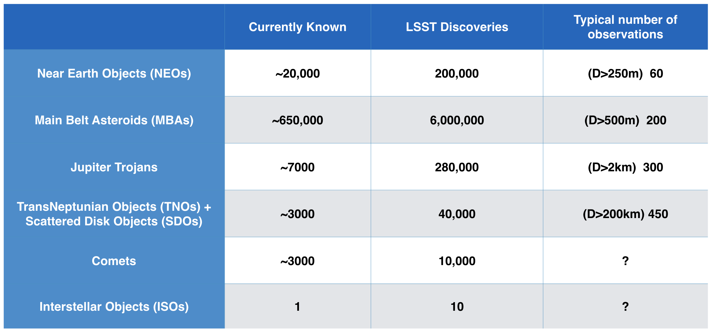

The SSSC has produced a science roadmap detailing the collaboration's science priorities with LSST; this living document is available here
LSST will map the Solar System , finding millions of asteroids, thousands of comets, tens of thousands of Kuiper belt objects (KBOs), and hundreds of thousands of Near Earth objects (NEOS). Most of these objects will receive hundreds of observerations in mulitiple filters over the 10-year lifetime of the LSST Wide-Fast-Deep Survey.

Image Credit: Lynne Jones - More details on how these values were estaimted can be found in the LSST Science Book
An overview of all expected LSST science can be found here.